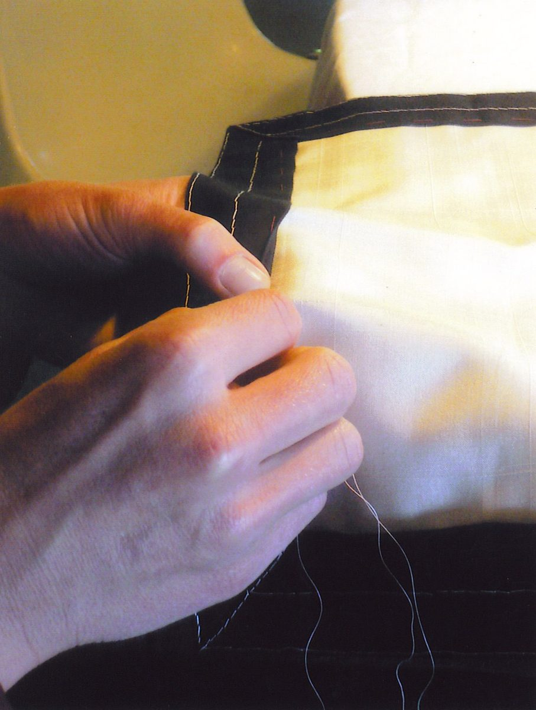
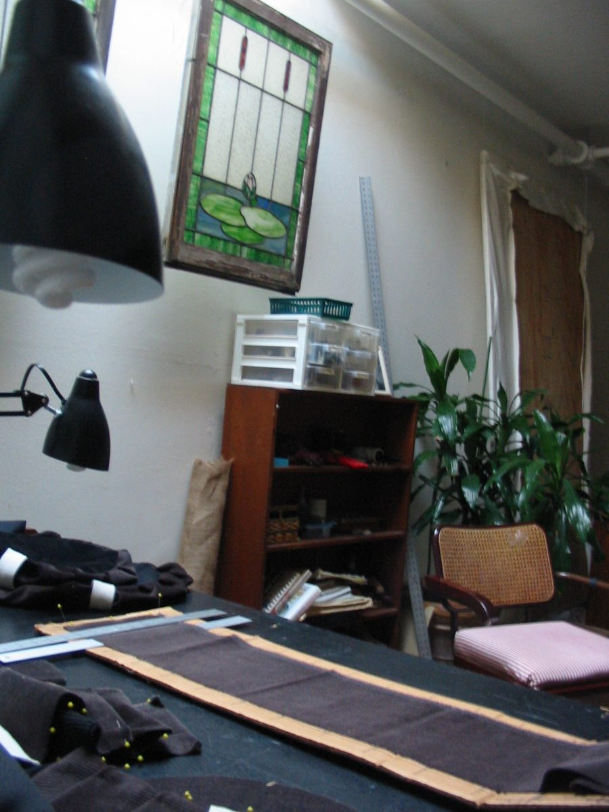

Did you know that the word sutra is Sanskrit for sewing? This winter, Stone Nest Dojo hosts a sesshin devoted to sewing the rakusu and kesa.

Details
- Dates: Thursday, January 7 – Sunday, January 10, 2027. Teacher Gary Enns will likely arrive a day or two early to set up and stay a day or two after; others are welcome to do the same and get some additional sewing done.
- Place: Stone Nest Dojo, 3818 Sherwood Rd, Sewanee, TN 37375
- Led by: Gary Enns, director of the Dust Bowl Dojo in Bakersfield, California, with Richard Reishin Collins, Abbot of the American Zen Association.
- Register / questions: nozentemple@gmail.com
What to expect
This is a regular winter sesshin — zazen, meals, and dharma talks — with a workshop devoted to sewing the rakusu and/or kesa. In addition to the sewing, there will be talks on the history and significance of the kesa and rakusu.
Anyone sewing a rakusu will be sewing in place of samu (work practice), apart from a few necessary chores such as cleaning and dishes.
Rakusu kits
Kits are being prepared by Gary, with the fabric pre-washed so you can begin right away. Standard kits include habotai silk panels and silk thread (non-silk options are available by advance request), in black or brown. Please let us know if you would like a kit in advance — kits may also be purchased early so you can start collecting additional notions before the sesshin. Tools are available to borrow for anyone who arrives with nothing. A workshop sheet listing kit contents and the items to bring will be shared with registrants.
Copies of The Book of the Kesa will be available.

Ordination
One of Gary's students is interested in taking bodhisattva ordination during the sesshin. A kit on hand is also helpful for anyone who feels the urge to receive ordination, bodhisattva or monastic.
To sign up, or to ask about lodging and arrival, write to nozentemple@gmail.com. If you have not yet sat with us, please write ahead.